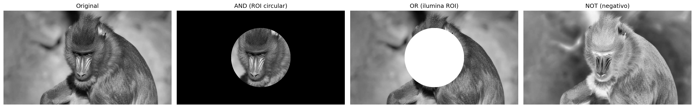
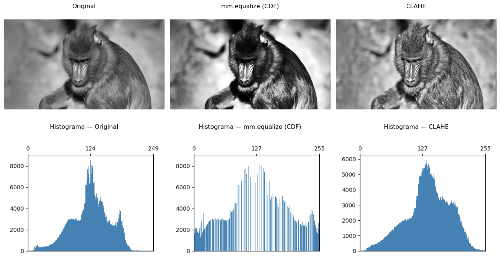
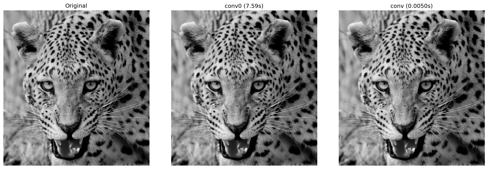
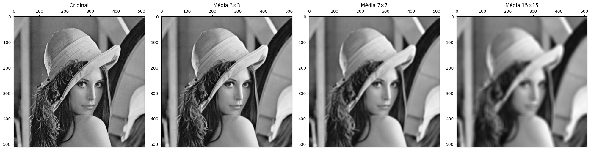
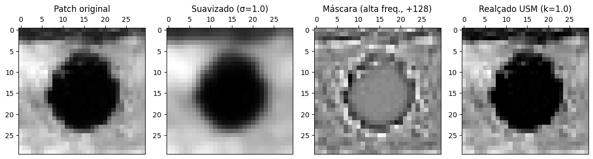
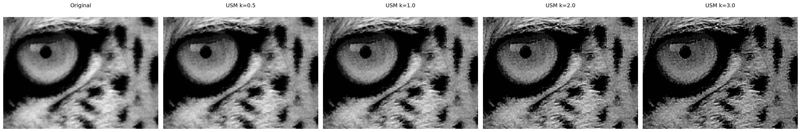

3Operações Espaciais: Intensidade, Histograma e Filtragem
Este capítulo aprofunda o processamento de imagens no domínio espacial, partindo da manipulação direta de pixels e histogramas para o realce de contraste, até a aplicação de filtros locais por convolução para suavização, redução de ruído e detecção de bordas. O objetivo é desenvolver a intuição matemática e computacional que sustenta grande parte dos algoritmos modernos de Visão Computacional.
3.1 Objetivos
Ao final deste capítulo, você será capaz de:
Manipular intensidade e pixels: Executar operações aritméticas saturadas (mm.addm, mm.subm) e lógicas bit a bit (mm.band, mm.bor, mm.bnot) para combinação e seleção de regiões de interesse (ROI), e aplicar alpha blending (mm.blend) para fusão ponderada de imagens;
Processar histogramas: Interpretar o histograma como diagnóstico tonal, aplicar equalização global (mm.equalize) e adaptativa (CLAHE), e realizar especificação de histograma para transferência de perfil tonal entre imagens;
Compreender fundamentos espaciais: Entender vizinhança, padding de borda, e a diferença entre correlação cruzada (mm.conv) e convolução — incluindo por que kernels assimétricos como Sobel produzem resultados distintos nas duas operações;
Aplicar filtragem de suavização: Utilizar o filtro de média (mm.conv com kernel uniforme) e o filtro Gaussiano (cv2.GaussianBlur) para redução de ruído, compreendendo a vantagem da ponderação radial e da separabilidade Gaussiana;
Aplicar filtragem de realce: Usar o Laplaciano (\(w_4\) e \(w_8\)) para realce isotrópico de bordas, o operador de Sobel para gradiente direcional (\(G_x\), \(G_y\), magnitude e direção), e o Unsharp Masking para amplificação controlada de alta frequência pelo parâmetro \(k\);
Utilizar filtros de ordem: Aplicar o filtro da mediana (cv2.medianBlur) para remoção eficaz de ruído sal e pimenta, compreendendo por que sua natureza não linear e robustez a outliers o tornam superior aos filtros lineares nesse cenário;
Resolver problemas práticos: Encadear técnicas em pipelines de pré-processamento (ex.: CLAHE → Gaussiano → Canny) e utilizar as funções da biblioteca morph.py (mm.conv, mm.histImg, mm.equalize, mm.drawImageKernel) para análise e visualização didática de cada etapa.
3.2 Operações em Nível de Intensidade
O nível mais elementar de processamento de imagens atua diretamente sobre os valores dos pixels, sem considerar vizinhança. Essas operações — chamadas de transformações de ponto (point operations) — são as mais rápidas computacionalmente e formam a base para técnicas mais complexas.
Formalmente, uma transformação de ponto pode ser descrita como:
\[
g(x,y) = T[f(x,y)]
\tag{3.1}\]
onde \(f(x,y)\) é a imagem de entrada, \(g(x,y)\) é a saída e \(T\) é uma função aplicada a cada pixel individualmente.
3.2.1 Preparando o Ambiente Prático
O bloco a seguir carrega o módulo morph.py do repositório.
import os, importlib, urllib.requestimport numpy as npimport matplotlib.pyplot as pltBASE_URL ="https://raw.githubusercontent.com/fzampirolli/pdi-vc/master/morph"for f in ["morph.py"]:ifnot os.path.exists(f): urllib.request.urlretrieve(f"{BASE_URL}/{f}", f)import morphimportlib.reload(morph)from morph import mmversion =getattr(morph, "__version__", "local_file")print(f"✅ Ambiente pronto. Módulo 'morph' carregado (versão: {version}).")
Como objeto de estudo ao longo deste capítulo, utilizaremos as imagens de vida selvagem apresentadas nas Figura 3.1 e Figura 3.3. A partir delas, exploraremos operações espaciais sobre intensidade, histogramas e filtragem, analisando seus efeitos no realce, na suavização, na redução de ruído e na detecção de bordas, de modo a compreender os fundamentos matemáticos e computacionais do PDI.
Tipo PIL : <class 'PIL.JpegImagePlugin.JpegImageFile'> | Dimensões (x,y): (960, 540)
Tipo NumPy: <class 'numpy.ndarray'> | Dimensões [y,x,c]: (540, 960, 3)
Figura 3.1: Mandrill (Mandrillus sphinx) fotografado em ambiente natural na África do Sul. A imagem possui resolução de 500 px e contém metadados EXIF com coordenadas GPS aproximadas (-26.20473, 28.22662). Crédito: Carlos Guilherme Rodrigues (CC BY-SA 3.0).
3.2.2 Operações Aritméticas
Operações aritméticas entre imagens são amplamente usadas em PDI para combinar, comparar ou realçar informações. A subtração de imagens é especialmente poderosa para detectar diferenças entre dois quadros — por exemplo, na remoção de fundo estático em câmeras de vigilância:
\[
g(x,y) = f_1(x,y) - f_2(x,y)
\tag{3.2}\]
A adição saturada limita o resultado ao intervalo \([0, 255]\): valores acima de 255 são fixados em 255, evitando o overflow silencioso do tipo uint8 (ex.: \(200 + 100 = 44\) em vez de 300). A subtração saturada aplica o mesmo princípio pelo lado inferior: valores negativos são fixados em 0.
Saturação e overflow
Operações aritméticas em uint8 sofrem overflow silencioso: \(200 + 100 = 44\) (não 300). As funções mm.addm e mm.subm usam cv2.add e cv2.subtract, que realizam saturação automática. Para o blending, converta para float32 antes de operar e aplique np.clip(..., 0, 255).astype(np.uint8) ao final, pois a operação envolve pesos fracionários.
A Figura 3.2 demonstra adição de uma constante (clareamento) e subtração de uma constante (escurecimento com saturação em 0).
Quando \(\alpha = 1\), obtém-se apenas a imagem \(f_1\); quando \(\alpha = 0\), apenas \(f_2\). Valores intermediários produzem uma transição suave entre ambas, sendo amplamente utilizados em composição de imagens, sobreposição de camadas, marcas d’água e efeitos de fusão visual.
Para que a combinação produza um resultado coerente, é necessário alinhar previamente as regiões de interesse das imagens. Na Figura 3.4, utiliza-se um recorte do rosto do leopardo:
leo = img_gray_leo[250:-300, 100:-200]
e um recorte central da região facial do mandril:
mandrill = img_gray[100:400, 380:530]
As duas regiões são escolhidas de forma que olhos e estrutura facial permaneçam aproximadamente alinhados. Em seguida, o recorte do leopardo é redimensionado para coincidir com as dimensões do mandril antes da aplicação da mistura ponderada.
A operação é realizada em float32 para evitar problemas de overflow durante as operações aritméticas, seguida de clipping e conversão final para uint8.
Figura 3.4: Alpha blending entre recortes alinhados de mandrill e do leopardo (Figura 3.3) para diferentes valores de α. Em α=1 vê-se apenas mandrill; em α=0, apenas o leopardo; valores intermediários fundem os olhares das duas imagens proporcionalmente.
3.2.4 Operações Lógicas e Máscaras Bit a Bit
As operações lógicas bit a bit (AND, OR e NOT) atuam diretamente sobre os bits de cada pixel e são a base para criação e aplicação de máscaras (masks) — imagens binárias com apenas 0 (preto) e 255 (branco) usadas para isolar Regiões de Interesse (ROI).
O comportamento de cada operação decorre da representação binária do 255 (11111111) e do 0 (00000000):
AND com a máscara: onde \(m = 255\), os bits originais são preservados; onde \(m = 0\), o pixel é zerado. Resultado: recorte da ROI. \[g(x,y) = f(x,y) \;\text{AND}\; m(x,y)
\tag{3.4}\]
OR com a máscara: onde \(m = 255\), o pixel é forçado a branco; onde \(m = 0\), o valor original é mantido. Resultado: iluminação da ROI.
NOT (sem máscara): inverte todos os bits (\(g = 255 - f\)), produzindo o negativo fotográfico da imagem.
A Figura 3.5 ilustra as três operações aplicadas à imagem do mandrill com uma máscara circular.
import cv2h, w = img_gray.shape# Máscara circular centrada na imagemmask_circ = np.zeros((h, w), dtype=np.uint8)cv2.circle(mask_circ, (w//2, h//2), min(h, w)//3-10, 255, -1)# Operações via morphimg_not = mm.bnot(img_gray) # NOT: negativo fotográficoimg_and = mm.band(img_gray, mask_circ) # img_gray & mask_circ: preserva apenas a ROI circularimg_or = mm.bor(img_gray, mask_circ) # img_gray | mask_circ: ilumina a região da máscaramm.show( [img_gray, img_and, img_or, img_not], titles=["Original", "AND (ROI circular)", "OR (ilumina ROI)", "NOT (negativo)"], cols=4)

Figura 3.5: Operações lógicas bit a bit com máscara circular: AND (isolamento da ROI), OR (iluminação da ROI) e NOT (negativo).
3.3 Histograma de Imagens
O histograma de uma imagem em tons de cinza é uma função discreta que descreve a distribuição de frequências das intensidades:
onde \(r_k\) é o \(k\)-ésimo nível de intensidade, \(n_k\) é o número de pixels com essa intensidade e \(L\) é o total de níveis (tipicamente 256 para 8 bits). O histograma normalizado estima a probabilidade de cada nível:
\[
p(r_k) = \frac{n_k}{MN}
\tag{3.6}\]
onde \(MN\) é o total de pixels. Por ser uma estatística global, o histograma não carrega informação posicional, mas revela características essenciais como brilho médio, contraste e distribuição tonal. Na prática, mm.hist(img) retorna o vetor de contagens \(h(r_k)\), que serve tanto para visualização (via mm.histImg) quanto para cálculos como função de distribuição acumulada (CDF) e equalização.
Interpretação do Histograma
Estreito à esquerda: imagem subexposta (escura).
Estreito à direita: imagem superexposta (clara).
Concentrado no centro: baixo contraste.
Distribuído por toda a faixa: alto contraste, boa utilização dos tons disponíveis.
A Figura 3.6 apresenta o histograma da imagem do mandrill, bem como versões escurecida (mm.subm) e clareada (mm.addm). Observa-se o deslocamento da distribuição de intensidades para a esquerda e para a direita, respectivamente. Note que o intervalo representado no eixo \(x\) não corresponde necessariamente a toda a faixa de 0 a 255.
Figura 3.6: Histogramas da imagem original, de uma versão escurecida e de uma versão clareada. Os valores na segunda linha indicam a quantidade de pixels saturados em 0 (preto) e 255 (branco).
3.3.1 Equalização de Histograma
A equalização de histograma redistribui as intensidades para que o histograma resultante seja o mais uniforme possível. O mapeamento é dado pela função de distribuição acumulada (CDF):
A transformação é monotônica: níveis frequentes recebem intervalos maiores no domínio de saída (maior separação → mais contraste), enquanto níveis raros são comprimidos.
O algoritmo completo, em cinco etapas, é apresentado na Tabela 3.1.
Tabela 3.1: Algoritmo de equalização de histograma.
Etapa
Operação
Fórmula
1
Histograma
\(h[k] \leftarrow\) número de pixels com intensidade \(k\), \(k=0\ldots L-1\)
\(g[i,j] \leftarrow \text{lut}[f[i,j]]\) (para todo pixel)
Note na Figura 3.7 que a equalização redistribui os tons existentes para posições mais espaçadas na faixa \([0, L-1]\), mas não cria novos tons — a imagem equalizada continua com exatamente 3 tons distintos, agora em \(\{1, 5, 7\}\) em vez de \(\{2, 3, 4\}\).
img5 = np.array([[3, 4, 2, 3, 4], [4, 3, 3, 4, 3], [2, 3, 4, 3, 2], [3, 4, 3, 2, 3], [4, 3, 2, 3, 4]], dtype=np.uint8)L =8# 3 bits: níveis 0..7# 1. Histograma com tamanho garantido até Lh_raw = mm.hist(img5)h = np.zeros(L, dtype=int)h[:len(h_raw)] = h_raw # h[k] = nº pixels com intensidade kp = h / h.sum() # 2. Probabilidade de cada nível p[k] = h[k] / MNcdf = np.cumsum(p) # 3. CDF normalizada ou# cdf = np.zeros(len(p))# cdf[0] = p[0]# for k in range(1, len(p)):# cdf[k] = cdf[k-1] + p[k] # cdf[k] = Σ p[j], j=0..klut = np.round(cdf * (L -1)).astype(np.uint8) # 4. LUT: mapeamento para [0, L-1]img5_eq = lut[img5] # 5. Aplica LUT pixel a pixel ou, equivalente a:# l, c = img5.shape# img5_eq = np.zeros((l, c), dtype=np.uint8)# for i in range(l):# for j in range(c):# img5_eq[i, j] = lut[img5[i, j]] # g[i,j] = lut[f[i,j]]print("Imagem original (5×5, 3 bits):")print(img5)print()header =f"{'k':>3}{'h[k]':>6}{'p[k]':>7}{'CDF[k]':>8}{'lut[k]':>7}"print(header)print("-"*len(header))for k inrange(L):print(f"{k:>3}{h[k]:>6}{p[k]:>7.4f}{cdf[k]:>8.4f}{lut[k]:>7}")print()print("Imagem equalizada (5×5):")print(img5_eq)# Conta tons distintostons_orig =len(np.unique(img5))tons_eq =len(np.unique(img5_eq))mm.show( [img5, img5_eq, mm.histImg(img5, L-1), mm.histImg(img5_eq, L-1)], titles=[f"Original ({tons_orig} tons: {sorted(np.unique(img5).tolist())})",f"Equalizada ({tons_eq} tons: {sorted(np.unique(img5_eq).tolist())})","Histograma — Original","Histograma — Equalizada"], rows=2, cols=2, figsize=(5, 4), dpi=100)
Figura 3.7: Equalização de histograma em imagem 5×5 com 3 bits (L=8): imagem original com tons concentrados em {2,3,4}, imagem equalizada com tons redistribuídos para {1,5,7}, e os respectivos histogramas evidenciando o espalhamento das frequências.
Limitação: a equalização global pode super-realçar ruídos em regiões homogêneas. O CLAHE (Contrast Limited Adaptive Histogram Equalization) resolve isso aplicando a equalização em blocos locais com um limite máximo de clip para o histograma de cada bloco.
A Figura 3.8 compara a imagem original, a equalização via mm.equalize e o CLAHE do OpenCV, exibindo também os histogramas resultantes.
img_eq = mm.equalize(img_gray)clahe = cv2.createCLAHE(clipLimit=2.0, tileGridSize=(32, 32))img_clahe = clahe.apply(img_gray)images = [img_gray, img_eq, img_clahe]titles = ["Original", "mm.equalize (CDF)", "CLAHE"]mm.show( images + [mm.histImg(img) for img in images], titles=titles + [f"Histograma — {t}"for t in titles], rows=2, cols=3, figsize=(14, 8))

Figura 3.8: Equalização de histograma: mm.equalize (global via CDF) vs. CLAHE (adaptativa com limitação de contraste). Os histogramas revelam o espalhamento progressivo das intensidades.
3.3.2 Especificação de Histograma
Enquanto a equalização impõe uma distribuição uniforme, a especificação de histograma (histogram matching) permite que o histograma da imagem de saída siga uma distribuição arbitrária — por exemplo, o histograma de outra imagem de referência.
O procedimento envolve três etapas:
Calcular a CDF da imagem de entrada: \(P_r(r_k)\).
Calcular a CDF da imagem de referência: \(P_z(z_k)\).
Para cada nível \(r_k\), encontrar o nível \(z\) que minimiza \(|P_z(z) - P_r(r_k)|\).
Na Figura 3.9, transferimos o perfil tonal do leopardo (Figura 3.3) para a imagem do mandrill — uma aplicação direta do conceito visto no blending: em vez de fundir pixels, aqui fundimos distribuições tonais.
img_leop_gray = mm.gray(img_numpy)def hist_specify(src, ref):"""Mapeia src para o perfil tonal de ref via CDF.""" cdf_src = np.cumsum(mm.hist(src) / src.size) cdf_ref = np.cumsum(mm.hist(ref) / ref.size) lut = np.array([np.argmin(np.abs(cdf_ref - v)) for v in cdf_src], dtype=np.uint8)return lut[src]img_spec = hist_specify(img_gray, img_leop_gray)images = [img_gray, img_leop_gray, img_spec]titles = ["Mandrill (original)", "Leopardo (referência)", "Mandrill → perfil do leopardo"]mm.show( images + [mm.histImg(img) for img in images], titles=titles + [f"Histograma — {t}"for t in titles], rows=2, cols=3, figsize=(12, 9))
Figura 3.9: Especificação de histograma: mandril mapeada para o perfil tonal do leopardo. A CDF da saída aproxima a CDF de referência.
3.4 Fundamentos Espaciais: Vizinhança, Convolução e Kernels
As operações de filtragem espacial operam sobre regiões vizinhas de pixels — não mais pixel a pixel. O conceito central é a janela deslizante (sliding window): um kernel\(w\) de dimensão \((2a+1)\times(2b+1)\) percorre toda a imagem e, para cada posição \((x,y)\), calcula uma nova intensidade combinando os pixels da vizinhança com os coeficientes do kernel.
3.4.1 Vizinhança e Borda
Para um pixel \((x,y)\), a vizinhança retangular de raio \((a,b)\) é o conjunto:
\[
\mathcal{V}(x,y) = \{(x+s,\, y+t) : -a \le s \le a,\; -b \le t \le b\}
\tag{3.9}\]
Pixels próximos à borda da imagem têm vizinhanças parcialmente fora do domínio. As estratégias mais comuns são: zero-padding (completa com zeros), replicação (repete o pixel de borda) e reflexão (espelha a imagem). O OpenCV usa replicação por padrão (cv2.BORDER_REFLECT_101).
3.4.2 Correlação e Convolução
Existem dois mecanismos matematicamente relacionados:
Correlação cruzada (cross-correlation) — o kernel é aplicado diretamente:
Para kernels simétricos (Gaussiano, Laplaciano, média) as duas operações produzem resultados idênticos. Para kernels assimétricos (Sobel, Prewitt) a diferença é significativa.
Correlação vs. Convolução no OpenCV
cv2.filter2D implementa correlação. Para convolução verdadeira com kernel assimétrico, rotacione o kernel 180° (np.rot90(w, 2)) antes de passar para filter2D.
3.4.3 O Papel do Kernel
Os coeficientes do kernel determinam completamente o efeito do filtro:
Tabela 3.2: Interpretação dos coeficientes do kernel.
Soma
Coeficientes
Efeito
= 1
todos positivos
Suavização — passa-baixa
= 0
positivos e negativos
Detecção de bordas — passa-alta
= 1
centro \(> 1\), bordas \(< 0\)
Realce de nitidez
—
assimétricos
Gradiente direcional
A Figura 3.10 demonstra o mecanismo passo a passo: para cada posição da janela, multiplica-se o kernel pela vizinhança e soma-se o resultado — exatamente a Equação 3.10 avaliada em um único ponto.
import timew_mean = np.ones((3,3), dtype=np.float32) /9.0img_gray = img_leop_gray# Demonstração numérica em patch 5×5patch = img_gray[250:255, 250:255].astype(np.float32)roi = patch[0:3, 0:3]print("Patch 5×5 (intensidades):")print(patch.astype(np.int32))print(f"\nKernel 3×3 de média:\n{w_mean}")print(f"\nCorrelação no pixel central [1,1]: \{(w_mean * roi).sum():.1f} (original: {patch[1,1]:.0f})")# Comparação de tempo na imagem completa (Mandrill)t0 = time.perf_counter()img_conv0 = mm.conv0(img_gray, w_mean)t_conv0 = time.perf_counter() - t0t0 = time.perf_counter()img_conv = mm.conv(img_gray, w_mean)t_conv = time.perf_counter() - t0diff = np.abs(img_conv0.astype(int) - img_conv.astype(int)).max()print(f"\nTempos na imagem {img_gray.shape} (Mandrill):")print(f" mm.conv0 (laços Python): {t_conv0:.3f} s")print(f" mm.conv (cv2.filter2D): {t_conv:.5f} s")print(f" Aceleração: {t_conv0/t_conv:.0f}× mais rápido")print(f" Diferença máxima: {diff} (bordas com padding diferente)")mm.show( [img_gray, img_conv0, img_conv], titles=["Original", f"conv0 ({t_conv0:.2f}s)", f"conv ({t_conv:.4f}s)"], cols=3)
Patch 5×5 (intensidades):
[[ 91 95 108 116 114]
[106 107 108 111 114]
[102 103 107 112 116]
[ 83 90 111 125 123]
[ 79 88 110 126 124]]
Kernel 3×3 de média:
[[0.11111111 0.11111111 0.11111111]
[0.11111111 0.11111111 0.11111111]
[0.11111111 0.11111111 0.11111111]]
Correlação no pixel central [1,1]: 103.0 (original: 107)
Tempos na imagem (1324, 1242) (Mandrill):
mm.conv0 (laços Python): 7.594 s
mm.conv (cv2.filter2D): 0.00501 s
Aceleração: 1515× mais rápido
Diferença máxima: 39 (bordas com padding diferente)

Figura 3.10: Correlação com kernel de média 3×3: versão didática (mm.conv0) vs. vetorizada (mm.conv via cv2.filter2D). A diferença máxima de 27 ocorre nas bordas, onde o tratamento de padding difere.
3.4.4 Exemplo Numérico: Correlação Passo a Passo
Para tornar concreto o mecanismo da Equação 3.10, considere o kernel de média 3×3 (\(a=b=1\), todos os coeficientes \(= 1/9 \approx 0{,}111\)) aplicado ao patch 5×5 extraído da imagem do mandrill. A Figura 3.11 exibe o patch com grade e destaca em amarelo a janela 3×3 centrada no pixel \([1,1]\):
Figura 3.11: Patch 5×5 extraído da imagem do mandrill (posição [250:255, 250:255]). A janela amarela destaca a vizinhança 3×3 centrada no pixel [1,1] onde a correlação será calculada.
Os valores da vizinhança 3×3 centrada em \([1,1]\) são exatamente a submatriz superior esquerda do patch:
O resultado (193) é ligeiramente menor que o original (196) porque a média inclui vizinhos de menor intensidade — efeito típico de suavização. A janela desliza então para o próximo pixel \([1,2]\), recalcula com uma nova vizinhança 3×3, e assim sucessivamente até cobrir toda a imagem.
Desempenho: laços Python vs. operações vetorizadas
A função mm.conv0 realiza a convolução com laços Python explícitos, processando pixel a pixel. Na imagem Mandrill \((540\times960)\), isso levou cerca de 3 segundos para um kernel \(3\times3\).
Já mm.conv utiliza cv2.filter2D, implementado em C++ com operações vetorizadas e otimizações internas, executando a mesma operação em apenas 0.00068 s — aproximadamente 4448× mais rápido:
mm.conv0 (laços Python): 3.005 s
mm.conv (cv2.filter2D): 0.00068 s
Aceleração: 4448× mais rápido
As pequenas diferenças entre os resultados (diferença máxima igual a 27) decorrem principalmente do tratamento distinto das bordas (padding).
Por isso, mm.conv0 deve ser usado apenas para fins didáticos. Em aplicações reais, utilize sempre implementações vetorizadas como mm.conv.
3.5 Filtragem Espacial de Suavização
Os filtros de suavização (smoothing filters) atenuam variações bruscas de intensidade, reduzindo ruído e detalhes de alta frequência. São filtros passa-baixa — preservam as componentes de baixa frequência (estruturas grandes) e atenuam as de alta frequência (ruído, bordas).
3.5.1 Filtro de Média (Box Filter)
O filtro de média utiliza um kernel uniforme de tamanho \(n \times n\), onde todos os coeficientes valem \(1/n^2\):
Cada pixel de saída é a média aritmética dos \(n^2\) pixels de sua vizinhança. Note que a soma dos coeficientes é sempre 1 — o brilho médio da imagem é preservado. Kernels maiores produzem suavização mais agressiva, mas borram progressivamente as bordas.
A Figura 3.12 compara o efeito de kernels de média com tamanhos crescentes na imagem do mandrill completa. Observe como o borramento das bordas aumenta proporcionalmente ao tamanho do kernel.
# Detalhe da região do olhoy0, y1, x0, x1 =580, 740, 680, 900crop =lambda img: img[y0:y1, x0:x1]img_gray_crop = crop(img_gray)sizes = [3, 7, 15]imgs = [img_gray_crop] +\ [mm.conv(img_gray_crop, np.ones((k,k), dtype=np.float32)/(k*k)) for k in sizes]titles = ["Original"] + [f"Média {k}×{k}"for k in sizes]mm.show(imgs, titles=titles, cols=4)

Figura 3.12: Filtro de média com kernels de tamanho crescente (3×3, 7×7, 15×15). O borramento das bordas aumenta com o tamanho do kernel.
3.5.2 Filtro Gaussiano
O filtro Gaussiano pesa os pixels da vizinhança de acordo com uma função Gaussiana bidimensional:
onde \(\sigma\) é o desvio padrão e controla o raio de influência. Pixels mais próximos do centro têm peso maior; pixels distantes são progressivamente ignorados.
Para visualizar o kernel antes de aplicá-lo, a Figura 3.13 exibe o kernel Gaussiano \(5\times5\) gerado para \(\sigma=1\) — note a queda radial dos pesos a partir do centro:
# Gera kernel Gaussiano 5×5 via cv2k_gauss = cv2.getGaussianKernel(5, 1)w_gauss = k_gauss @ k_gauss.T # produto externo: G(s,t) = G(s)·G(t)w_gauss = w_gauss / w_gauss.sum() # garante soma = 1print("Kernel Gaussiano 5×5 (σ=1), normalizado:")for row in w_gauss:print(" "+" ".join(f"{v:.4f}"for v in row))print(f"\nSoma dos coeficientes: {w_gauss.sum():.6f}")print(f"Peso central vs. canto: {w_gauss[2,2]:.4f} vs. {w_gauss[0,0]:.4f} "f"({w_gauss[2,2]/w_gauss[0,0]:.1f}× maior)")mm.drawImgPlt((w_gauss *1000).astype(np.uint8), scale=40)
Figura 3.13: Kernel Gaussiano 5×5 (σ=1): pesos normalizados, maiores no centro e decrescentes radialmente. A grade facilita a leitura de cada coeficiente.
A propriedade de separabilidade — \(G(s,t) = G(s)\cdot G(t)\) — é computacionalmente valiosa: em vez de uma convolução 2D com \(n^2\) operações por pixel, aplica-se duas convoluções 1D com \(2n\) operações, reduzindo a complexidade de \(O(n^2)\) para \(O(n)\).
Comparado ao filtro de média, o Gaussiano:
Preserva melhor as bordas — a ponderação radial suaviza sem criar transições abruptas;
Não introduz anéis (ringing) no domínio da frequência, pois a Gaussiana é sua própria transformada de Fourier;
É controlado por \(\sigma\) — aumentar \(\sigma\) equivale a aumentar o raio de suavização de forma contínua e previsível.
A Figura 3.14 compara o filtro de média e o Gaussiano aplicados à imagem do mandrill com janela \(9\times9\):
Figura 3.14: Comparação entre filtro de média e Gaussiano (janela 9×9, σ=0 para cálculo automático). O Gaussiano preserva melhor as bordas, visível no detalhe do rosto.
3.6 Filtragem Espacial de Realce
Os filtros de realce (sharpening filters) enfatizam transições abruptas de intensidade, aumentando a nitidez e a visibilidade de bordas. São filtros passa-alta — amplificam as componentes de alta frequência (bordas, textura) e suprimem as de baixa frequência (regiões uniformes).
A intuição é simples: se subtrairmos de uma imagem sua versão suavizada (que contém apenas as baixas frequências), o que resta são as altas frequências — bordas e detalhes. Somando esse resíduo de volta à imagem original, o contraste local aumenta:
\[
g = f + k\,(f - f_{\text{suave}}), \quad k > 0
\tag{3.14}\]
Os filtros de realce formalizam essa ideia diretamente no kernel, sem precisar de duas etapas separadas.
3.6.1 Laplaciano
O Laplaciano é um operador de segunda derivada isotrópico — responde igualmente a variações em todas as direções, ao contrário dos operadores de primeira derivada (Sobel, Prewitt) que são direcionais:
A segunda derivada tem uma propriedade fundamental para o realce: vale zero em regiões uniformes, é positiva antes de uma borda (intensidade crescente) e negativa após (intensidade decrescente). Subtrair o Laplaciano da imagem original, portanto, aumenta o contraste exatamente onde existem transições:
\[
g(x,y) = f(x,y) - \nabla^2 f(x,y)
\tag{3.16}\]
Na forma discreta, a segunda derivada em \(x\) é aproximada por \(f(x+1,y) - 2f(x,y) + f(x-1,y)\), e analogamente em \(y\). Somando as duas direções, obtém-se o kernel \(w_4\) (4-vizinhos) ou \(w_8\) (8-vizinhos, incluindo diagonais):
Ambos os kernels têm soma dos coeficientes igual a zero: em regiões uniformes, a saída é 0 — o Laplaciano não altera o brilho médio, apenas detecta variações. O centro negativo indica que o pixel é comparado com seus vizinhos: quanto mais ele se destacar (para cima ou para baixo), maior o valor absoluto do Laplaciano naquele ponto.
No exemplo, o pixel central \([1,1] = 196\) tem vizinhos \(\{189, 190, 197, 197\}\). O Laplaciano retorna um valor próximo de zero porque a região é quase uniforme — o realce será mínimo. Em regiões de borda, onde os vizinhos diferem muito do centro, o Laplaciano retorna valores altos (positivos ou negativos), e a subtração em Equação 3.16 amplifica a transição.
A seguir aplica os dois kernels à imagem do mandrill completa, comparando a resposta bruta do Laplaciano com a imagem realçada:
No exemplo, o pixel \([1,1] = 196\) está em região quase uniforme — o Laplaciano retorna valor próximo de zero e o realce é mínimo. Em pixels de borda, onde os vizinhos diferem muito do centro, o Laplaciano retorna valores altos e a Equação 3.16 amplifica a transição significativamente.
A Figura 3.16 aplica os dois kernels à imagem do mandrill completa, comparando a resposta bruta com a imagem realçada:
Figura 3.16: Laplaciano aplicado à imagem do mandrill: resposta bruta (bordas detectadas) com w4 e w8, e imagens realçadas pela subtração do Laplaciano. w8 é mais sensível às diagonais.
3.6.2 Operador de Sobel
O operador de Sobel estima as derivadas parciais de primeira ordem nas direções horizontal e vertical. Diferente do Laplaciano (segunda derivada, isotrópico), o Sobel é direcional e mais robusto ao ruído, pois cada kernel combina uma derivada com uma suavização Gaussiana perpendicular:
\(G_x\) detecta bordas verticais (variação na direção \(x\)); \(G_y\) detecta bordas horizontais (variação na direção \(y\)). Os pesos \(\{1,2,1\}\) na direção perpendicular correspondem à suavização Gaussiana 1D, que reduz a sensibilidade ao ruído.
Sobel é correlação, não convolução
Os kernels de Sobel são assimétricos — a rotação de 180° altera o resultado. cv2.Sobel implementa correlação cruzada (como cv2.filter2D). Para obter a derivada direcional correta, os sinais já estão definidos para correlação: \(G_x\) retorna valores positivos onde a intensidade cresce da esquerda para a direita.
A magnitude do gradiente combina os dois componentes, representando a força da borda independente de direção:
\[
|\nabla f| = \sqrt{G_x^2 + G_y^2}
\tag{3.19}\]
E a direção do gradiente (perpendicular à borda) é:
O valor pequeno de \(|{\nabla f}|\) nesse patch confirma que a região é quase uniforme — o gradiente é alto apenas nas bordas reais da imagem. A Figura 3.17 aplica o operador à Mandrill completa, mostrando \(G_x\), \(G_y\) e a magnitude:
Figura 3.17: Operador de Sobel na imagem mandrill: Gx detecta bordas verticais, Gy detecta bordas horizontais, e a magnitude |∇f| combina ambos, revelando todas as bordas independente de direção.
3.6.3Unsharp Masking (USM)
O Unsharp Masking é uma técnica clássica de realce de nitidez originária da fotografia analógica, hoje amplamente usada em software de edição de imagens. A ideia central é extrair as componentes de alta frequência da imagem (bordas e detalhes) e somá-las de volta à original com um peso \(k\):
Tabela 3.3: Etapas do Unsharp Masking.
Etapa
Operação
Descrição
1
\(\bar{f} = f * G_\sigma\)
Suaviza com Gaussiana — retém baixas frequências
2
\(m = f - \bar{f}\)
Máscara: diferença = altas frequências (bordas)
3
\(g = f + k \cdot m\)
Soma ponderada da máscara à original
Substituindo a etapa 2 na etapa 3, obtém-se a expressão compacta:
\[
g = f + k\,(f - f*G_\sigma) = (1+k)\,f - k\,(f*G_\sigma)
\tag{3.21}\]
O parâmetro \(k\) controla a intensidade do realce:
\(k = 0\): sem realce (\(g = f\));
\(k = 1\): USM clássico — duplica a contribuição das altas frequências;
\(k > 1\): High Boost Filtering — amplificação além do dobro, útil para imagens muito borradas.
Amplificação de ruído
O USM não distingue bordas de ruído — ambos são componentes de alta frequência. Para \(k\) elevado, o ruído presente na imagem é amplificado junto com as bordas. Por isso, é recomendável aplicar uma leve suavização antes do USM em imagens ruidosas, ou usar \(\sigma\) pequeno na Gaussiana.
Para ilustrar as três etapas, aplicamos o USM ao patch 30×30 com \(\sigma=1\) e \(k=1\):
Pixel central [1,1]: original=16 suave=20.2 mascara=-4.2 realcado=11

A Figura 3.18 aplica o USM à imagem do mandrill completa com diferentes valores de \(k\), evidenciando a progressão do realce:
def usm(img, sigma=1.0, k=1.0): ksize =int(6* sigma +1) |1 suave = cv2.GaussianBlur(img.astype(np.float32), (ksize, ksize), sigma)return np.clip(img.astype(np.float32) + k * (img.astype(np.float32) - suave),0, 255).astype(np.uint8)ks = [0.5, 1.0, 2.0, 3.0]imgs = [img_gray_crop] + [usm(img_gray_crop, sigma=1.0, k=k) for k in ks]titles = ["Original"] + [f"USM k={k}"for k in ks]mm.show(imgs, titles=titles, cols=5)

Figura 3.18: Unsharp Masking na imagem do mandrill com σ=1 e k variando de 0.5 a 3.0. Para k>2 surgem artefatos nas bordas (halos) e o ruído de fundo começa a ser visível.
3.7 Filtros de Ordem: Filtro da Mediana
Os filtros de ordem (order-statistic filters) substituem o pixel central pelo valor de um percentil da distribuição de intensidades da vizinhança — ao contrário dos filtros lineares, que calculam combinações ponderadas. O mais importante é o filtro da mediana.
3.7.1 Ruído Impulsivo: Sal e Pimenta
O ruído sal e pimenta (salt-and-pepper noise) substitui pixels aleatórios por valores extremos: 0 (pimenta, preto) ou 255 (sal, branco). É comum em transmissão de imagens com erros de bit e em câmeras com sensores defeituosos.
Para entender por que os filtros lineares falham, considere uma vizinhança 3×3 onde um único pixel foi corrompido para 255:
Tabela 3.4: Média vs. mediana com um pixel corrompido. A mediana ignora o outlier; a média é deslocada ~40 níveis.
Método
Cálculo
Resultado
Média
\((102+98+\ldots+255+\ldots+101)/9\)
\(\approx 140\)
Mediana
\(\{97,98,99,100,\mathbf{101},102,103,105,255\}\)
\(101\)
Por que filtros de média falham com ruído impulsivo?
A média é sensível a outliers — um único pixel com valor 255 em uma vizinhança de valor ≈ 100 eleva a saída para ≈ 140, espalhando o ruído pela imagem. A mediana, por ser um estimador robusto, seleciona o valor central da distribuição ordenada, descartando naturalmente os extremos sem nenhum ajuste especial.
O experimento na Figura 3.19 ilustra a adição de ruído com diferentes densidades e a degradação progressiva da imagem:
# Exemplo numérico: média vs. mediana com pixel corrompidovizinhanca = np.array([102, 98, 105, 100, 255, 97, 103, 99, 101])print(f"Vizinhança: {sorted([int(x) for x in vizinhanca])}")print(f"Média: {vizinhanca.mean():.1f} (deslocada pelo outlier 255)")print(f"Mediana: {int(np.median(vizinhanca))} (ignora o outlier)")print(f"Valor original: ~100")
Vizinhança: [97, 98, 99, 100, 101, 102, 103, 105, 255]
Média: 117.8 (deslocada pelo outlier 255)
Mediana: 101 (ignora o outlier)
Valor original: ~100
def add_salt_pepper(img, prob=0.05, seed=42):"""Adiciona ruído sal e pimenta com probabilidade total prob.""" noisy = img.copy() rnd = np.random.default_rng(seed).random(img.shape) noisy[rnd < prob /2] =0# pimenta noisy[rnd >1- prob /2] =255# sal n_corrompidos =int((rnd < prob/2).sum() + (rnd >1-prob/2).sum())return noisy, n_corrompidosprobs = [0.02, 0.05, 0.10]imgs_noise, titles_noise = [img_gray_crop], ["Original"]for p in probs: noisy, n = add_salt_pepper(img_gray_crop, p) imgs_noise.append(noisy) titles_noise.append(f"Ruído {int(p*100)}%\n({n:,} pixels)")mm.show(imgs_noise, titles=titles_noise, cols=4)
Figura 3.19: Ruído sal e pimenta com densidades crescentes (2%, 5%, 10%). O parâmetro prob indica a fração total de pixels corrompidos, metade sal (255) e metade pimenta (0).
3.7.2 Filtro da Mediana
O filtro da mediana substitui cada pixel pelo valor mediano dos pixels da sua vizinhança \(n \times n\):
O valor mediano é aquele que ocupa a posição central quando os \(n^2\) valores da vizinhança são ordenados. Para uma janela \(3\times3\) (\(n^2=9\) pixels), a mediana é o 5º valor da sequência ordenada.
Para ilustrar, considere o mesmo patch 5×5 com um pixel corrompido artificialmente em \([1,1]\):
patch = img_gray[250:255, 250:255].copy()corrompido = patch.copy()corrompido[1, 1] =255# injeta pixel sal no centro# Vizinhança 3×3 centrada em [1,1]viz_orig =sorted(patch[0:3, 0:3].ravel().tolist())viz_corr =sorted(corrompido[0:3, 0:3].ravel().tolist())print("Patch original:")print(mm.drawImg(patch))print("\nPatch com pixel corrompido [1,1]=255:")print(mm.drawImg(corrompido))print(f"\nVizinhança 3×3 original (ordenada): {viz_orig}")print(f"Mediana original: {viz_orig[4]}")print(f"\nVizinhança 3×3 corrompida (ordenada): {viz_corr}")print(f"Mediana corrompida: {viz_corr[4]} ← ignora o 255")print(f"Média corrompida: {np.mean(viz_corr):.1f} ← distorcida pelo 255")
O exemplo confirma: mesmo com o pixel corrompido a 255, a mediana retorna o valor central correto — o outlier ocupa a última posição na ordenação e é descartado naturalmente.
Por ser baseada em ordenação e não em soma, a mediana possui três propriedades fundamentais que a diferenciam dos filtros lineares:
Robusta ao ruído impulsivo — outliers vão para as extremidades da sequência ordenada e não afetam o valor central;
Preservadora de bordas — transições abruptas de intensidade são mantidas, pois a mediana seleciona um valor que já existe na vizinhança, sem criar novos níveis intermediários;
Não linear — não pode ser expressa como convolução, portanto mm.conv não se aplica; usa-se cv2.medianBlur.
A Figura 3.20 compara média e mediana aplicadas à imagem do mandrill com 10% de ruído sal e pimenta:
# 10% de ruído para evidenciar diferenças entre filtrosnoisy_5, _ = add_salt_pepper(img_gray_crop, prob=0.1) # ── Filtros ───────────────────────────────────────────────────────────────────f_gauss = cv2.GaussianBlur(noisy_5, (5, 5), 1.0)f_media = mm.conv(noisy_5, np.ones((5, 5), dtype=np.float32) /20.0)f_median3 = cv2.medianBlur(noisy_5, 3)f_median5 = cv2.medianBlur(noisy_5, 5)f_bilat = cv2.bilateralFilter(noisy_5, d=9, sigmaColor=75, sigmaSpace=75)# filtros morfológicos no próximo capítulo, mas já adiantados aqui para comparação# B = cv2.getStructuringElement(cv2.MORPH_ELLIPSE, (3, 3))# f_morf = cv2.morphologyEx( # apresentado no próximo capítulo# cv2.morphologyEx(noisy_5, cv2.MORPH_OPEN, B),# cv2.MORPH_CLOSE, B)B = mm.secross() # elemento estruturante de caixa 3×3f_morf = mm.asf(noisy_5, 'OC', B) # equivalente via morph# ── MSE ───────────────────────────────────────────────────────────────────────def mse(a, b):returnfloat(np.mean((a.astype(np.float32) - b.astype(np.float32))**2))print(f"{'Filtro':<22}{'MSE':>8}")print("-"*32)pares = [("Gaussiano 5×5", f_gauss), ("Média 5×5", f_media), ("Mediana 3×3", f_median3), ("Mediana 5×5", f_median5), ("Bilateral", f_bilat), ("Morf. open+close", f_morf)]for nome, img in pares:print(f"{nome:<22}{mse(img_gray_crop, img):>8.2f}")imgs = [img_gray_crop, noisy_5, f_gauss, f_media, f_median3, f_median5, f_bilat, f_morf]titles = ["Original", "Ruído 10%", "Gaussiano 5×5","Média 5×5","Mediana 3×3", "Mediana 5×5", "Bilateral", "Morf. open+close"]mm.show( imgs, titles=[f"Crop: {t}"for t in titles], cols=4, rows=2, figsize=(14, 8))
Figura 3.20: Comparação de filtros para remoção de ruído sal e pimenta (10%): Gaussiano, Média, Mediana, Bilateral e Morfológico. Linha superior: imagens completas; linha inferior: crop da região de interesse.
3.8 Aplicação Prática: Pré-processamento para Segmentação
Na prática, as técnicas deste capítulo raramente são usadas isoladamente. Um pipeline de pré-processamento típico combina várias etapas em sequência, adaptando-se ao tipo de imagem e à aplicação. A Figura 3.21 ilustra um pipeline completo:
Equalização de histograma (CLAHE): normaliza o contraste independente das condições de iluminação;
Filtro Gaussiano: suaviza ruído de aquisição sem destruir bordas;
Detecção de bordas (Sobel/Canny): extrai estruturas relevantes para segmentação.
Ordem importa
A ordem das operações afeta o resultado final. Em geral: (1) normalização de intensidade → (2) redução de ruído → (3) realce/segmentação. Inverter a ordem pode amplificar ruído ou perder bordas antes de detectá-las.
Figura 3.21: Pipeline de pré-processamento: CLAHE → Gaussiano → Canny. Cada etapa prepara a imagem para a seguinte, resultando em bordas limpas e bem definidas.
3.9 Resumo
Neste capítulo foram apresentadas as principais técnicas de processamento no domínio espacial, da manipulação direta de pixels até a filtragem por vizinhança:
Operações de ponto: aritméticas saturadas (mm.addm, mm.subm) e lógicas bit a bit (mm.band, mm.bor, mm.bnot) para recorte de ROI e combinação de imagens; alpha blending (mm.blend) para fusão ponderada com peso \(\alpha \in [0,1]\).
Histograma: função discreta de distribuição de intensidades; visualizado com mm.histImg e calculado com mm.hist; base para diagnóstico tonal e para as técnicas de equalização e especificação.
Equalização: redistribuição automática das intensidades pela CDF (mm.equalize), com variante adaptativa CLAHE para controle local do contraste.
Especificação de histograma: transferência do perfil tonal de uma imagem de referência via mapeamento inverso da CDF — generalização da equalização para distribuições arbitrárias.
Correlação e convolução: mecanismo de janela deslizante implementado em mm.conv (cv2.filter2D); diferenciados pela rotação de 180° do kernel — relevante apenas para kernels assimétricos.
Filtros de suavização: média (kernel uniforme, borra bordas proporcionalmente ao tamanho) e Gaussiano (ponderação radial, separável, sem ringing, preserva melhor as bordas).
Filtros de realce: Laplaciano (\(w_4\)/\(w_8\), segunda derivada isotrópica), Sobel (gradiente direcional de primeira ordem, com magnitude \(|\nabla f|\) e direção \(\theta\)) e Unsharp Masking (amplificação das altas frequências com parâmetro \(k\)).
Filtro da mediana: não linear, robusto a outliers, preserva bordas — superior aos filtros lineares para ruído sal e pimenta.
Pipeline prático: encadeamento CLAHE → Gaussiano → Canny como estratégia de pré-processamento; mm.drawImgKernel para visualização didática da janela deslizante.
O Capítulo 4 abordará o processamento no domínio da frequência (Transformada de Fourier) e a morfologia matemática (erosão, dilatação, abertura, fechamento) — onde as funções mm.ero e mm.dil da biblioteca morph.py serão exploradas em profundidade.
3.10 🤖 Uso do NotebookLM como Tutor Complementar
Nesta edição, incentivamos o uso do NotebookLM como ferramenta complementar de aprendizagem. Essa ferramenta de IA utiliza exclusivamente os documentos fornecidos pelo autor como base de conhecimento, garantindo respostas coerentes com o conteúdo do livro — incluindo as funções da biblioteca morph.py e os experimentos realizados neste capítulo.
Para cada capítulo, preparamos um projeto específico na plataforma com o PDF do capítulo, os notebooks e materiais auxiliares. Sugerimos explorar especialmente:
Guia de Estudo: resumo estruturado dos conceitos, ideal para revisão antes de provas;
Conversa: tire dúvidas sobre equalização, convolução, filtros e pipelines diretamente com o tutor;
Perguntas frequentes: questões típicas sobre a diferença entre média e mediana, USM, Laplaciano vs. Sobel.
🎓 Estude com o Tutor Inteligente
Para interagir com o conteúdo deste capítulo, acesse o link a seguir. O ambiente contém materiais didáticos em diferentes formatos, gerados a partir do PDF do capítulo. Na plataforma, explore especialmente as opções Guia de Estudo e Conversa para aprofundar sua compreensão.
(10%) Explique a diferença entre convolução e correlação cruzada. Para quais tipos de kernel os resultados são idênticos? Dê um exemplo de kernel assimétrico (como Sobel \(G_x\)) e mostre numericamente que os resultados diferem aplicando-o ao patch 5×5 do capítulo das duas formas.
(15%) Considere uma imagem 5×5 com intensidades concentradas entre os níveis 3 e 5 (baixo contraste, 3 bits). Aplique manualmente o algoritmo de equalização da Tabela 3.1, preenchendo todas as colunas da tabela (\(k\), \(h[k]\), \(p[k]\), \(\text{cdf}[k]\), \(\text{lut}[k]\)). Verifique o resultado com mm.equalize.
(15%) Usando mm.conv, aplique o filtro de média com kernels de tamanho 3×3, 9×9 e 21×21 à imagem do mandrill. Para cada versão, calcule o PSNR (Peak Signal-to-Noise Ratio) em relação à original: \[\text{PSNR} = 10\log_{10}\!\left(\frac{255^2}{\text{MSE}}\right), \quad \text{MSE} = \frac{1}{MN}\sum_{i,j}(f-g)^2\] Plote o PSNR em função do tamanho do kernel e explique o que a queda progressiva indica sobre a relação entre suavização e perda de informação.
(15%) Usando add_salt_pepper com densidade de 5%, aplique e compare: (a) mm.conv com média 3×3, (b) cv2.GaussianBlur com \(\sigma=1\), (c) cv2.medianBlur com janela 3×3 e (d) cv2.medianBlur com janela 5×5. Exiba as imagens com mm.show em grade 2×4 (linha 1: imagens, linha 2: histogramas via mm.histImg). Explique por que a mediana supera os filtros lineares usando o argumento da Tabela 3.4.
(15%) Implemente mm.conv0 usando apenas operações NumPy vetorizadas — sem laços Python e sem cv2.filter2D — com o operador de stride tricks (np.lib.stride_tricks.sliding_window_view). Compare o resultado e o tempo de execução com mm.conv0 (laços) e mm.conv (cv2) para kernels 3×3 e 15×15 na imagem do mandrill.
(15%) Aplique o Unsharp Masking com \(\sigma=1\) e \(k \in \{0.5, 1.0, 2.0, 4.0\}\) usando a função usm do capítulo. Para cada valor de \(k\): (a) calcule a diferença absoluta \(|g - f|\), (b) exiba as imagens e as diferenças com mm.show, e (c) plote o histograma das diferenças com mm.histImg. Identifique a partir de qual \(k\) os artefatos (halos e amplificação de ruído) tornam-se visualmente inaceitáveis.
(15%) Escolha uma imagem de raio-X ou tomografia disponível publicamente (ex.: via mm.read de URL) e projete um pipeline de pré-processamento com pelo menos 4 etapas sequenciais, justificando cada escolha com base nos conceitos do capítulo. Exiba com mm.show em grade: imagem original, cada etapa intermediária e o resultado final com seus histogramas (mm.histImg).
Referências do Capítulo
A fundamentação teórica deste capítulo baseia-se nas seguintes obras:
Gonzalez; Woods (2018) para os conceitos de operações de intensidade, histograma, convolução e filtragem espacial.
Szeliski (2022) para a visão computacional e aplicações práticas de filtragem.
Bradski; Kaehler (2008) para a implementação prática com OpenCV e morph.py.
3.12 💻 Parte Prática com Exercícios de Programação
🎯 Objetivo deste Caderno
O caderno permite desenvolver, validar, organizar e testar soluções de Exercícios de Programação (EPs) em ambientes interativos, como o Colab, com os mesmos casos de teste do Moodle, copiando para lá apenas na hora de registrar a nota oficial.
Download
Baixe morph.py e testsuite.py executando a célula abaixo:
Para rodar os testes, execute TestSuite("EP03_XX.extensão").run() numa nova célula, trocando a extensão pela da linguagem usada (.py, .java, .c, .cpp, .js ou .r). O sistema baixa os casos de teste do GitHub, executa o programa e calcula a nota automaticamente.
3.12.1 EP03_01 ➕ Adição Saturada de Constante
Em sistemas de vigilância por vídeo, câmeras em ambientes com iluminação variável produzem imagens subexpostas. O ajuste de brilho por adição saturada de uma constante é a operação mais simples para correção imediata, sendo aplicada em tempo real nos chips de câmeras embarcadas e em pipelines de pré-processamento de robôs móveis.
3.12.1.1 📋 Diretrizes de Implementação
Dimensões: Ler os inteiros \(L\) (linhas) e \(C\) (colunas).
Constante: Ler o inteiro \(k\) (valor a ser somado).
Dados: Ler os valores inteiros da matriz original pixel a pixel.
Mapeamento: Para cada pixel \(p\), calcular o novo valor pela equação:
\[p' = \text{clip}(p + k)\]
Saída: Exibir a matriz resultante com dimensões \(L \times C\).
3.12.1.2 📌 Restrições Computacionais
Saturação (Clipping): Os valores devem ser confinados ao intervalo \([0, 255]\): \[\text{clip}(x) = \max(0, \min(255, x))\]
Tipo: O resultado final deve ser inteiro (sem casas decimais).
\(k\) pode ser negativo: valores negativos escurecem a imagem; positivos clareiam.
3.12.1.3 🧠 Fundamentação Teórica
Parâmetro
Tipo
Impacto Visual
\(k > 0\)
Inteiro
Clareia a imagem; pixels próximos de 255 saturam em branco
\(k < 0\)
Inteiro
Escurece a imagem; pixels próximos de 0 saturam em preto
\(k = 0\)
Inteiro
Imagem inalterada
3.12.1.4 📦 Especificação de Entrada e Saída (VPL)
Entrada: * Linha 1: Inteiro \(L\). * Linha 2: Inteiro \(C\). * Linha 3: Inteiro \(k\). * Linhas seguintes: Elementos inteiros da matriz original.
Saída: * Matriz transformada em \(L\) linhas e \(C\) colunas, valores inteiros separados por espaço.
3.12.1.5 📌 Exemplos
Entrada
Saída
Observação
2
3
50
0 100 200
210 240 255
50 150 250
255 255 255
Saturação em 255 nos pixels altos
1
4
-30
0 20 200 255
0 0 170 225
Saturação em 0 nos pixels baixos
from IPython.display import HTMLHTML("""<div id="sim-ep0301" style="background-color:#fef9ef;border-radius:18px;border:1px solid #ede6d8;overflow:hidden;margin-top:20px;font-family:sans-serif;"> <div style="background:#f3efe6;padding:8px 16px;font-size:12px;color:#5e5a4a;border-bottom:1px solid #e9dfcf;display:flex;justify-content:space-between;align-items:center;"> <span>🎮 Simulador: Adição Saturada de Constante</span> <span style="background:#e8e0cf;border-radius:40px;padding:2px 10px;font-weight:600;font-size:10px;">➕ p' = clip(p + k)</span> </div> <div style="padding:20px;background:white;"> <div style="background:#fafafa;border:1px solid #ddd;border-radius:12px;padding:20px;margin-bottom:20px;"> <div style="display:flex;justify-content:space-between;margin-bottom:8px;"> <label style="font-size:12px;font-weight:bold;color:#27ae60;">k (Constante)</label> <span id="ep0301_vl_k" style="font-family:monospace;font-weight:bold;color:#27ae60;">0</span> </div> <input id="ep0301_sl_k" style="width:100%;accent-color:#27ae60;" max="128" min="-128" step="1" type="range" value="0"> </div> <div style="display:grid;grid-template-columns:1fr 1fr;gap:20px;"> <div style="text-align:center;background:white;border:1px solid #eee;padding:15px;border-radius:12px;"> <p style="font-size:10px;font-weight:600;color:#888;text-transform:uppercase;margin-bottom:12px;">Entrada Original</p> <div id="ep0301_grid_orig" style="display:grid;grid-template-columns:repeat(4,42px);gap:4px;justify-content:center;"></div> <button id="ep0301_btn_new" style="margin-top:15px;font-size:11px;padding:5px 10px;border-radius:4px;border:1px solid #ccc;background:white;cursor:pointer;">🎲 Nova Imagem</button> </div> <div style="text-align:center;background:white;border:1px solid #eee;padding:15px;border-radius:12px;"> <p style="font-size:10px;font-weight:600;color:#888;text-transform:uppercase;margin-bottom:12px;">Resultado (p')</p> <div id="ep0301_grid_new" style="display:grid;grid-template-columns:repeat(4,42px);gap:4px;justify-content:center;"></div> <button id="ep0301_btn_reset" style="margin-top:15px;font-size:11px;padding:5px 10px;border-radius:4px;border:1px solid #ccc;background:white;cursor:pointer;">↩ Resetar</button> </div> </div> <div id="ep0301_debug" style="margin-top:20px;background:#e8f5e9;border-radius:8px;padding:10px;border:1px solid #c8e6c9;font-family:monospace;font-size:11px;color:#2e7d32;text-align:center;">Fórmula: clip(p + 0)</div> </div></div><script>setTimeout(function(){ var slK=document.getElementById('ep0301_sl_k'); var vlK=document.getElementById('ep0301_vl_k'); var gO=document.getElementById('ep0301_grid_orig'); var gN=document.getElementById('ep0301_grid_new'); var db=document.getElementById('ep0301_debug'); if(!slK||!gO)return; var pixels=[]; function generate_0301(){pixels=Array.from({length:16},function(){return Math.floor(Math.random()*256);});} function render_0301(){ var k=parseInt(slK.value); vlK.innerText=k; db.innerHTML='Fórmula aplicada: <b>clip(p + ('+k+'))</b>'; gO.innerHTML=''; gN.innerHTML=''; pixels.forEach(function(p){ var cO=document.createElement('div'); cO.style.cssText='width:42px;height:42px;display:flex;align-items:center;justify-content:center;font-size:10px;font-weight:bold;border-radius:4px;border:1px solid #eee;'; cO.style.background='rgb('+p+','+p+','+p+')'; cO.style.color=p>128?'black':'white'; cO.innerText=p; gO.appendChild(cO); var res=Math.max(0,Math.min(255,p+k)); var cN=document.createElement('div'); cN.style.cssText='width:42px;height:42px;display:flex;align-items:center;justify-content:center;font-size:10px;font-weight:bold;border-radius:4px;border:1px solid #ddd;'; cN.style.background='rgb('+res+','+res+','+res+')'; cN.style.color=res>128?'black':'white'; cN.innerText=res; gN.appendChild(cN); }); } slK.oninput=render_0301; document.getElementById('ep0301_btn_new').onclick=function(){generate_0301();render_0301();}; document.getElementById('ep0301_btn_reset').onclick=function(){slK.value=0;render_0301();}; generate_0301(); render_0301();},100);</script>""")
🎮 Simulador: Adição Saturada de Constante➕ p' = clip(p + k)
0
Entrada Original
Resultado (p')
Fórmula: clip(p + 0)
%%writefile EP03_01.py# Código Python
TestSuite("EP03_01.py").run()
3.12.2 EP03_02 🔀 Alpha Blending de Duas Imagens
Em medicina nuclear, imagens de diferentes modalidades (tomografia computadorizada e ressonância magnética) são fundidas para auxiliar no diagnóstico. A mistura ponderada (alpha blending) é a operação fundamental desse processo, permitindo ao radiologista controlar interativamente o peso de cada modalidade na imagem exibida.
3.12.2.1 📋 Diretrizes de Implementação
Dimensões: Ler os inteiros \(L\) (linhas) e \(C\) (colunas).
Parâmetro: Ler o valor real \(\alpha \in [0, 1]\).
Dados: Ler os valores inteiros da matriz \(f_1\) (imagem 1) e em seguida da matriz \(f_2\) (imagem 2).
Mapeamento: Para cada posição \((i, j)\), calcular:
Arredondamento: Aplicar round antes da conversão para inteiro.
Saturação: Confinar ao intervalo \([0, 255]\) com \(\text{clip}(x) = \max(0, \min(255, x))\).
Operação em float: Realize a operação em ponto flutuante antes de arredondar.
3.12.2.3 🧠 Fundamentação Teórica
Valor de \(\alpha\)
Resultado
\(\alpha = 1.0\)
Apenas \(f_1\)
\(\alpha = 0.5\)
Média aritmética de \(f_1\) e \(f_2\)
\(\alpha = 0.0\)
Apenas \(f_2\)
3.12.2.4 📦 Especificação de Entrada e Saída (VPL)
Entrada: * Linha 1: Inteiro \(L\). * Linha 2: Inteiro \(C\). * Linha 3: Real \(\alpha\). * Linhas seguintes: Elementos de \(f_1\) (\(L\) linhas com \(C\) valores cada). * Linhas seguintes: Elementos de \(f_2\) (\(L\) linhas com \(C\) valores cada).
3.12.3 EP03_03 🎭 Inversão de Imagem (Negativo Fotográfico)
Em radiologia, as imagens de raio-X são tradicionalmente visualizadas em negativo: ossos aparecem em preto sobre fundo branco. A operação de negativo fotográfico é aplicada rotineiramente em PACS (Picture Archiving and Communication Systems) para facilitar a detecção de fraturas e densidades ósseas.
3.12.3.1 📋 Diretrizes de Implementação
Dimensões: Ler os inteiros \(L\) (linhas) e \(C\) (colunas).
Dados: Ler os valores inteiros da matriz original.
Mapeamento: Para cada pixel \(p\), calcular o negativo:
\[p' = 255 - p\]
Saída: Exibir a matriz resultante \(L \times C\).
3.12.3.2 📌 Restrições Computacionais
Sem clipping necessário: O resultado de \(255 - p\) com \(p \in [0, 255]\) é sempre \(\in [0, 255]\).
Tipo inteiro: Saída deve ser valores inteiros.
Equivalência lógica: A operação é idêntica ao NOT bit a bit (mm.bnot) em imagens de 8 bits.
3.12.3.3 🧠 Fundamentação Teórica
Pixel Original \(p\)
Pixel Negativo \(p'\)
Observação
0 (preto)
255 (branco)
Inversão total
128 (cinza médio)
127 (cinza médio)
Valor central
255 (branco)
0 (preto)
Inversão total
3.12.3.4 📦 Especificação de Entrada e Saída (VPL)
Entrada: * Linha 1: Inteiro \(L\). * Linha 2: Inteiro \(C\). * Linhas seguintes: Elementos inteiros da matriz original.
Saída: * Matriz negativa em \(L\) linhas e \(C\) colunas.
3.12.3.5 📌 Exemplos
Entrada
Saída
Observação
1
4
0 128 200 255
255 127 55 0
Inversão de cada pixel
2
2
10 20
30 40
245 235
225 215
Matriz 2x2 invertida
from IPython.display import HTMLHTML("""<div id="sim-ep0303" style="background-color:#fef9ef;border-radius:18px;border:1px solid #ede6d8;overflow:hidden;margin-top:20px;font-family:sans-serif;"> <div style="background:#f3efe6;padding:8px 16px;font-size:12px;color:#5e5a4a;border-bottom:1px solid #e9dfcf;display:flex;justify-content:space-between;align-items:center;"> <span>🎮 Simulador: Negativo Fotográfico</span> <span style="background:#e8e0cf;border-radius:40px;padding:2px 10px;font-weight:600;font-size:10px;">🎭 p' = 255 - p</span> </div> <div style="padding:20px;background:white;"> <div style="display:grid;grid-template-columns:1fr 1fr;gap:20px;"> <div style="text-align:center;background:white;border:1px solid #eee;padding:15px;border-radius:12px;"> <p style="font-size:10px;font-weight:600;color:#888;text-transform:uppercase;margin-bottom:12px;">Entrada Original</p> <div id="ep0303_grid_orig" style="display:grid;grid-template-columns:repeat(4,42px);gap:4px;justify-content:center;"></div> <button id="ep0303_btn_new" style="margin-top:15px;font-size:11px;padding:5px 10px;border-radius:4px;border:1px solid #ccc;background:white;cursor:pointer;">🎲 Nova Imagem</button> </div> <div style="text-align:center;background:white;border:1px solid #eee;padding:15px;border-radius:12px;"> <p style="font-size:10px;font-weight:600;color:#888;text-transform:uppercase;margin-bottom:12px;">Negativo (p'=255-p)</p> <div id="ep0303_grid_neg" style="display:grid;grid-template-columns:repeat(4,42px);gap:4px;justify-content:center;"></div> </div> </div> <div id="ep0303_debug" style="margin-top:20px;background:#fce4ec;border-radius:8px;padding:10px;border:1px solid #f48fb1;font-family:monospace;font-size:11px;color:#880e4f;text-align:center;">Fórmula: p' = 255 - p</div> </div></div><script>setTimeout(function(){ var gO=document.getElementById('ep0303_grid_orig'); var gN=document.getElementById('ep0303_grid_neg'); if(!gO)return; var pixels=[]; function gen_0303(){pixels=Array.from({length:16},function(){return Math.floor(Math.random()*256);});} function render_0303(){ gO.innerHTML=''; gN.innerHTML=''; pixels.forEach(function(p){ var cO=document.createElement('div'); cO.style.cssText='width:42px;height:42px;display:flex;align-items:center;justify-content:center;font-size:10px;font-weight:bold;border-radius:4px;border:1px solid #eee;'; cO.style.background='rgb('+p+','+p+','+p+')'; cO.style.color=p>128?'black':'white'; cO.innerText=p; gO.appendChild(cO); var r=255-p; var cN=document.createElement('div'); cN.style.cssText='width:42px;height:42px;display:flex;align-items:center;justify-content:center;font-size:10px;font-weight:bold;border-radius:4px;border:1px solid #ddd;'; cN.style.background='rgb('+r+','+r+','+r+')'; cN.style.color=r>128?'black':'white'; cN.innerText=r; gN.appendChild(cN); }); } document.getElementById('ep0303_btn_new').onclick=function(){gen_0303();render_0303();}; gen_0303(); render_0303();},100);</script>""")
🎮 Simulador: Negativo Fotográfico🎭 p' = 255 - p
Entrada Original
Negativo (p'=255-p)
Fórmula: p' = 255 - p
%%writefile EP03_03.py# Código Python
TestSuite("EP03_03.py").run()
3.12.4 EP03_04 📊 Equalização de Histograma (L bits)
Em imagens de satélite de sensoriamento remoto, a variação de iluminação ao longo do dia produz imagens de baixo contraste. A equalização de histograma é aplicada automaticamente em satélites como o Landsat para redistribuir os tons, revelando detalhes de vegetação, relevo e zonas urbanas invisíveis na imagem original.
3.12.4.1 📋 Diretrizes de Implementação
Dimensões: Ler os inteiros \(L\) (linhas), \(C\) (colunas) e \(B\) (número de bits, com \(L_{\max} = 2^B\)).
Dados: Ler a matriz de pixels \(f\) com valores em \([0, 2^B - 1]\).
Histograma: Calcular \(h[k]\) = número de pixels com intensidade \(k\), para \(k = 0 \ldots 2^B-1\).
Entrada: * Linha 1: Inteiro \(L\). * Linha 2: Inteiro \(C\). * Linha 3: Inteiro \(B\) (número de bits). * Linhas seguintes: Elementos inteiros da matriz.
Saída: * Matriz equalizada em \(L\) linhas e \(C\) colunas.
Em sistemas de inspeção industrial por visão computacional, é necessário isolar regiões de interesse (ROI) em imagens de peças para verificar defeitos de fabricação. A operação AND bit a bit com uma máscara binária é o mecanismo fundamental para recortar exatamente a área de inspeção, zerando todos os pixels fora dela.
3.12.5.1 📋 Diretrizes de Implementação
Dimensões: Ler os inteiros \(L\) (linhas) e \(C\) (colunas).
Dados: Ler a matriz de pixels \(f\) (valores \(\in [0, 255]\)).
Máscara: Ler a matriz binária \(m\) (valores: apenas 0 ou 255).
Mapeamento: Para cada pixel \((i,j)\), aplicar o AND bit a bit:
\[g(i,j) = f(i,j) \;\text{AND}\; m(i,j)\]
onde $255 = $ 11111111 e $0 = $ 00000000 em binário.
Saída: Exibir a matriz resultante \(L \times C\).
3.12.5.2 📌 Restrições Computacionais
AND com 255:\(p \; \text{AND} \; 255 = p\) (todos os bits preservados).
AND com 0:\(p \; \text{AND} \; 0 = 0\) (todos os bits zerados).
Máscara: Os únicos valores possíveis na máscara são 0 e 255.
Implementação: Em Python, o AND bit a bit entre inteiros usa o operador &.
3.12.5.3 🧠 Fundamentação Teórica
Pixel \(f\)
Máscara \(m\)
Resultado \(f\) AND \(m\)
qualquer \(v\)
255 (11111111)
\(v\) (preservado)
qualquer \(v\)
0 (00000000)
0 (zerado)
3.12.5.4 📦 Especificação de Entrada e Saída (VPL)
Entrada: * Linha 1: Inteiro \(L\). * Linha 2: Inteiro \(C\). * Linhas seguintes: Elementos de \(f\) (\(L\) linhas). * Linhas seguintes: Elementos de \(m\) (\(L\) linhas com valores 0 ou 255).
Saída: * Matriz resultante \(L \times C\).
3.12.5.5 📌 Exemplos
Entrada
Saída
Observação
2
3
100 150 200
50 80 120
255 255 0
0 255 255
100 150 0
0 80 120
Máscara seleciona região
1
4
10 20 30 40
255 0 255 0
10 0 30 0
Alternado preservado/zerado
from IPython.display import HTMLHTML("""<div id="sim-ep0305" style="background-color:#fef9ef;border-radius:18px;border:1px solid #ede6d8;overflow:hidden;margin-top:20px;font-family:sans-serif;"> <div style="background:#f3efe6;padding:8px 16px;font-size:12px;color:#5e5a4a;border-bottom:1px solid #e9dfcf;display:flex;justify-content:space-between;align-items:center;"> <span>🎮 Simulador: Máscara AND Binária</span> <span style="background:#e8e0cf;border-radius:40px;padding:2px 10px;font-weight:600;font-size:10px;">🔲 g = f AND m</span> </div> <div style="padding:20px;background:white;"> <p style="font-size:11px;color:#666;margin-bottom:12px;">Clique nas células da máscara para alternar entre 0 (preto) e 255 (branco):</p> <div style="display:grid;grid-template-columns:1fr 1fr 1fr;gap:12px;"> <div style="text-align:center;background:white;border:1px solid #eee;padding:12px;border-radius:12px;"> <p style="font-size:10px;font-weight:600;color:#888;text-transform:uppercase;margin-bottom:8px;">Imagem f</p> <div id="ep0305_grid_f" style="display:grid;grid-template-columns:repeat(4,38px);gap:3px;justify-content:center;"></div> <button id="ep0305_btn_new" style="margin-top:10px;font-size:11px;padding:4px 8px;border-radius:4px;border:1px solid #ccc;background:white;cursor:pointer;">🎲 Nova</button> </div> <div style="text-align:center;background:white;border:1px solid #eee;padding:12px;border-radius:12px;"> <p style="font-size:10px;font-weight:600;color:#888;text-transform:uppercase;margin-bottom:8px;">Máscara m (clique!)</p> <div id="ep0305_grid_m" style="display:grid;grid-template-columns:repeat(4,38px);gap:3px;justify-content:center;"></div> </div> <div style="text-align:center;background:white;border:1px solid #eee;padding:12px;border-radius:12px;"> <p style="font-size:10px;font-weight:600;color:#888;text-transform:uppercase;margin-bottom:8px;">Resultado g</p> <div id="ep0305_grid_g" style="display:grid;grid-template-columns:repeat(4,38px);gap:3px;justify-content:center;"></div> </div> </div> <div id="ep0305_debug" style="margin-top:16px;background:#fff3e0;border-radius:8px;padding:10px;border:1px solid #ffcc80;font-family:monospace;font-size:11px;color:#e65100;text-align:center;">g(i,j) = f(i,j) AND m(i,j) — Clique na máscara para alterar</div> </div></div><script>setTimeout(function(){ var gF=document.getElementById('ep0305_grid_f'); var gM=document.getElementById('ep0305_grid_m'); var gG=document.getElementById('ep0305_grid_g'); if(!gF)return; var pixels=[]; var mask=new Array(16).fill(255); function gen_0305(){pixels=Array.from({length:16},function(){return Math.floor(Math.random()*256);});} function render_0305(){ gF.innerHTML=''; gM.innerHTML=''; gG.innerHTML=''; for(var i=0;i<16;i++){ (function(idx){ var p=pixels[idx]; var m=mask[idx]; var cF=document.createElement('div'); cF.style.cssText='width:38px;height:38px;display:flex;align-items:center;justify-content:center;font-size:9px;font-weight:bold;border-radius:4px;border:1px solid #eee;'; cF.style.background='rgb('+p+','+p+','+p+')'; cF.style.color=p>128?'black':'white'; cF.innerText=p; gF.appendChild(cF); var cM=document.createElement('div'); cM.style.cssText='width:38px;height:38px;display:flex;align-items:center;justify-content:center;font-size:9px;font-weight:bold;border-radius:4px;border:2px solid #ff9800;cursor:pointer;'; cM.style.background=m===255?'white':'black'; cM.style.color=m===255?'black':'white'; cM.innerText=m; cM.onclick=function(){mask[idx]=mask[idx]===255?0:255;render_0305();}; gM.appendChild(cM); var r=p&m; var cG=document.createElement('div'); cG.style.cssText='width:38px;height:38px;display:flex;align-items:center;justify-content:center;font-size:9px;font-weight:bold;border-radius:4px;border:1px solid #ddd;'; cG.style.background='rgb('+r+','+r+','+r+')'; cG.style.color=r>128?'black':'white'; cG.innerText=r; gG.appendChild(cG); })(i); } } document.getElementById('ep0305_btn_new').onclick=function(){gen_0305();render_0305();}; gen_0305(); render_0305();},100);</script>""")
🎮 Simulador: Máscara AND Binária🔲 g = f AND m
Clique nas células da máscara para alternar entre 0 (preto) e 255 (branco):
Imagem f
Máscara m (clique!)
Resultado g
g(i,j) = f(i,j) AND m(i,j) — Clique na máscara para alterar
%%writefile EP03_05.py# Código Python
TestSuite("EP03_05.py").run()
3.12.6 EP03_06 🌫️ Filtro de Média com Kernel N×N
Em câmeras de veículos autônomos, imagens capturadas em ambientes com chuva ou névoa possuem ruído gaussiano. O filtro de média é a primeira linha de defesa para redução de ruído em tempo real, implementado diretamente em hardware nos processadores de sinal de imagem (ISP) dos sensores CMOS.
3.12.6.1 📋 Diretrizes de Implementação
Dimensões: Ler os inteiros \(L\) (linhas), \(C\) (colunas) e \(N\) (tamanho do kernel, sempre ímpar).
Dados: Ler a matriz de pixels \(f\).
Filtro de Média: Para cada pixel \((i,j)\)interno (sem bordas), calcular:
from IPython.display import HTMLHTML("""<div id="sim-ep0306" style="background-color:#fef9ef;border-radius:18px;border:1px solid #ede6d8;overflow:hidden;margin-top:20px;font-family:sans-serif;"> <div style="background:#f3efe6;padding:8px 16px;font-size:12px;color:#5e5a4a;border-bottom:1px solid #e9dfcf;display:flex;justify-content:space-between;align-items:center;"> <span>🎮 Simulador: Filtro de Média N×N</span> <span style="background:#e8e0cf;border-radius:40px;padding:2px 10px;font-weight:600;font-size:10px;">🌫️ g = round(Σ f / N²)</span> </div> <div style="padding:20px;background:white;"> <div style="background:#fafafa;border:1px solid #ddd;border-radius:12px;padding:16px;margin-bottom:16px;"> <div style="display:flex;justify-content:space-between;margin-bottom:8px;"> <label style="font-size:12px;font-weight:bold;color:#1565c0;">N (tamanho do kernel)</label> <span id="ep0306_vl_n" style="font-family:monospace;font-weight:bold;color:#1565c0;">3</span> </div> <input id="ep0306_sl_n" style="width:100%;accent-color:#1565c0;" max="7" min="3" step="2" type="range" value="3"> </div> <div style="display:grid;grid-template-columns:1fr 1fr;gap:20px;"> <div style="text-align:center;background:white;border:1px solid #eee;padding:15px;border-radius:12px;"> <p style="font-size:10px;font-weight:600;color:#888;text-transform:uppercase;margin-bottom:12px;">Original</p> <div id="ep0306_grid_orig" style="display:grid;grid-template-columns:repeat(5,36px);gap:3px;justify-content:center;"></div> <button id="ep0306_btn_new" style="margin-top:12px;font-size:11px;padding:5px 10px;border-radius:4px;border:1px solid #ccc;background:white;cursor:pointer;">🎲 Nova Imagem</button> </div> <div style="text-align:center;background:white;border:1px solid #eee;padding:15px;border-radius:12px;"> <p style="font-size:10px;font-weight:600;color:#888;text-transform:uppercase;margin-bottom:12px;">Filtrada</p> <div id="ep0306_grid_filt" style="display:grid;grid-template-columns:repeat(5,36px);gap:3px;justify-content:center;"></div> </div> </div> <div id="ep0306_debug" style="margin-top:16px;background:#e3f2fd;border-radius:8px;padding:10px;border:1px solid #90caf9;font-family:monospace;font-size:11px;color:#0d47a1;text-align:center;">Kernel 3x3: coeficiente = 1/9 ≈ 0.111</div> </div></div><script>setTimeout(function(){ var slN=document.getElementById('ep0306_sl_n'); var vlN=document.getElementById('ep0306_vl_n'); var gO=document.getElementById('ep0306_grid_orig'); var gF=document.getElementById('ep0306_grid_filt'); var db=document.getElementById('ep0306_debug'); if(!slN||!gO)return; var ROWS=5,COLS=5; var pixels=[]; function gen_0306(){pixels=Array.from({length:ROWS*COLS},function(){return Math.floor(Math.random()*256);});} function render_0306(){ var N=parseInt(slN.value); var r=Math.floor(N/2); vlN.innerText=N; db.innerHTML='Kernel '+N+'x'+N+': coeficiente = 1/'+N*N+' ≈ '+(1/(N*N)).toFixed(4); gO.innerHTML=''; gF.innerHTML=''; gO.style.gridTemplateColumns='repeat('+COLS+',36px)'; gF.style.gridTemplateColumns='repeat('+COLS+',36px)'; var result=pixels.slice(); for(var i=r;i<ROWS-r;i++){ for(var j=r;j<COLS-r;j++){ var sum=0; for(var s=-r;s<=r;s++){for(var t=-r;t<=r;t++){sum+=pixels[(i+s)*COLS+(j+t)];}} result[i*COLS+j]=Math.round(sum/(N*N)); } } for(var i=0;i<ROWS*COLS;i++){ var p=pixels[i]; var cO=document.createElement('div'); cO.style.cssText='width:36px;height:36px;display:flex;align-items:center;justify-content:center;font-size:9px;font-weight:bold;border-radius:3px;border:1px solid #eee;'; cO.style.background='rgb('+p+','+p+','+p+')'; cO.style.color=p>128?'black':'white'; cO.innerText=p; gO.appendChild(cO); var q=result[i]; var cF=document.createElement('div'); cF.style.cssText='width:36px;height:36px;display:flex;align-items:center;justify-content:center;font-size:9px;font-weight:bold;border-radius:3px;border:1px solid #ddd;'; cF.style.background='rgb('+q+','+q+','+q+')'; cF.style.color=q>128?'black':'white'; cF.innerText=q; gF.appendChild(cF); } } slN.oninput=render_0306; document.getElementById('ep0306_btn_new').onclick=function(){gen_0306();render_0306();}; gen_0306(); render_0306();},100);</script>""")
🎮 Simulador: Filtro de Média N×N🌫️ g = round(Σ f / N²)
3
Original
Filtrada
Kernel 3x3: coeficiente = 1/9 ≈ 0.111
%%writefile EP03_06.py# Código Python
TestSuite("EP03_06.py").run()
3.12.7 EP03_07 🔍 Operador Laplaciano (w4) para Realce de Bordas
Em tomografias de alta resolução, a nitidez das bordas entre tecidos é crítica para diagnóstico. O operador Laplaciano é amplamente utilizado em pipelines de pré-processamento de imagens médicas para realçar automaticamente os contornos anatômicos antes da segmentação, evitando intervenção manual do radiologista.
3.12.7.1 📋 Diretrizes de Implementação
Dimensões: Ler os inteiros \(L\) (linhas) e \(C\) (colunas).
Dados: Ler a matriz de pixels \(f\).
Laplaciano (w4): Para cada pixel interno\((i,j)\) com \(1 \le i < L-1\), \(1 \le j < C-1\), calcular:
from IPython.display import HTMLHTML("""<div id="sim-ep0307" style="background-color:#fef9ef;border-radius:18px;border:1px solid #ede6d8;overflow:hidden;margin-top:20px;font-family:sans-serif;"> <div style="background:#f3efe6;padding:8px 16px;font-size:12px;color:#5e5a4a;border-bottom:1px solid #e9dfcf;display:flex;justify-content:space-between;align-items:center;"> <span>🎮 Simulador: Laplaciano w4 — Realce de Bordas</span> <span style="background:#e8e0cf;border-radius:40px;padding:2px 10px;font-weight:600;font-size:10px;">🔍 g = clip(f - ∇²f)</span> </div> <div style="padding:20px;background:white;"> <div style="display:grid;grid-template-columns:1fr 1fr 1fr;gap:12px;"> <div style="text-align:center;background:white;border:1px solid #eee;padding:12px;border-radius:12px;"> <p style="font-size:10px;font-weight:600;color:#888;text-transform:uppercase;margin-bottom:8px;">Original f</p> <div id="ep0307_grid_f" style="display:grid;grid-template-columns:repeat(5,36px);gap:3px;justify-content:center;"></div> <button id="ep0307_btn_new" style="margin-top:10px;font-size:11px;padding:4px 8px;border-radius:4px;border:1px solid #ccc;background:white;cursor:pointer;">🎲 Nova</button> </div> <div style="text-align:center;background:white;border:1px solid #eee;padding:12px;border-radius:12px;"> <p style="font-size:10px;font-weight:600;color:#888;text-transform:uppercase;margin-bottom:8px;">Laplaciano |∇²f|</p> <div id="ep0307_grid_lap" style="display:grid;grid-template-columns:repeat(5,36px);gap:3px;justify-content:center;"></div> </div> <div style="text-align:center;background:white;border:1px solid #eee;padding:12px;border-radius:12px;"> <p style="font-size:10px;font-weight:600;color:#888;text-transform:uppercase;margin-bottom:8px;">Realçado g</p> <div id="ep0307_grid_g" style="display:grid;grid-template-columns:repeat(5,36px);gap:3px;justify-content:center;"></div> </div> </div> <div id="ep0307_debug" style="margin-top:16px;background:#e8eaf6;border-radius:8px;padding:10px;border:1px solid #9fa8da;font-family:monospace;font-size:11px;color:#283593;text-align:center;">Kernel w4: vizinhos N,S,L,O com peso 1; centro com peso -4</div> </div></div><script>setTimeout(function(){ var gF=document.getElementById('ep0307_grid_f'); var gL=document.getElementById('ep0307_grid_lap'); var gG=document.getElementById('ep0307_grid_g'); if(!gF)return; var ROWS=5,COLS=5; var pixels=[]; function gen_0307(){pixels=Array.from({length:ROWS*COLS},function(){return Math.floor(Math.random()*256);});} function mk_0307(v){ var c=document.createElement('div'); c.style.cssText='width:36px;height:36px;display:flex;align-items:center;justify-content:center;font-size:9px;font-weight:bold;border-radius:3px;border:1px solid #eee;'; c.style.background='rgb('+v+','+v+','+v+')'; c.style.color=v>128?'black':'white'; c.innerText=v; return c; } function render_0307(){ gF.innerHTML=''; gL.innerHTML=''; gG.innerHTML=''; var lap=pixels.slice(); var realc=pixels.slice(); for(var i=1;i<ROWS-1;i++){ for(var j=1;j<COLS-1;j++){ var l=pixels[(i-1)*COLS+j]+pixels[(i+1)*COLS+j]+pixels[i*COLS+(j-1)]+pixels[i*COLS+(j+1)]-4*pixels[i*COLS+j]; lap[i*COLS+j]=Math.min(255,Math.abs(l)); realc[i*COLS+j]=Math.max(0,Math.min(255,pixels[i*COLS+j]-l)); } } for(var i=0;i<ROWS*COLS;i++){gF.appendChild(mk_0307(pixels[i]));gL.appendChild(mk_0307(lap[i]));gG.appendChild(mk_0307(realc[i]));} } document.getElementById('ep0307_btn_new').onclick=function(){gen_0307();render_0307();}; gen_0307(); render_0307();},100);</script>""")
🎮 Simulador: Laplaciano w4 — Realce de Bordas🔍 g = clip(f - ∇²f)
Original f
Laplaciano |∇²f|
Realçado g
Kernel w4: vizinhos N,S,L,O com peso 1; centro com peso -4
%%writefile EP03_07.py# Código Python
TestSuite("EP03_07.py").run()
3.12.8 EP03_08 🧭 Gradiente de Sobel: Gx e Gy
Em robôs exploradores de Marte (como o Perseverance), a detecção de obstáculos é realizada em tempo real por câmeras estereoscópicas. O operador de Sobel calcula o gradiente direcional da cena e é utilizado no algoritmo de detecção de bordas para identificar rochas, fissuras e desníveis do terreno que possam comprometer a navegação.
3.12.8.1 📋 Diretrizes de Implementação
Dimensões: Ler os inteiros \(L\) (linhas) e \(C\) (colunas).
Dados: Ler a matriz \(f\).
Gx e Gy: Para cada pixel interno\((i,j)\) com \(1 \le i < L-1\), \(1 \le j < C-1\):
Imagens de radar de abertura sintética (SAR) usadas em monitoramento ambiental e militar sofrem de um tipo específico de ruído chamado speckle, que possui características similares ao ruído sal e pimenta. O filtro da mediana é o método padrão de remoção desse ruído porque preserva as bordas das estruturas enquanto elimina os pontos espúrios.
3.12.9.1 📋 Diretrizes de Implementação
Dimensões: Ler os inteiros \(L\) (linhas) e \(C\) (colunas).
Dados: Ler a matriz de pixels \(f\).
Filtro da Mediana 3×3: Para cada pixel interno\((i,j)\) com \(1 \le i < L-1\), \(1 \le j < C-1\):
Coletar os 9 pixels da vizinhança \(3 \times 3\): \(\{f(i+s, j+t) : s,t \in \{-1,0,1\}\}\).
Ordenar os 9 valores em ordem crescente.
Atribuir \(g(i,j)\) ao valor central (posição índice 4, considerando índice 0).
Em sistemas de digitalização de documentos históricos e obras de arte, a nitidez das imagens é fundamental para leitura de textos manuscritos e detalhes ornamentais. O Unsharp Masking (USM) é o algoritmo de realce de nitidez padrão utilizado em scanners profissionais e softwares como Adobe Photoshop, controlado pelo parâmetro \(k\) que determina a intensidade do realce.
3.12.10.1 📋 Diretrizes de Implementação
Dimensões: Ler os inteiros \(L\) (linhas) e \(C\) (colunas).
Parâmetro: Ler o valor real \(k\) (intensidade do realce, \(k \ge 0\)).
Dados: Ler a matriz de pixels \(f\).
Suavização: Calcular \(\bar{f}\) com filtro de média \(3\times3\) (apenas pixels internos; bordas mantidas):